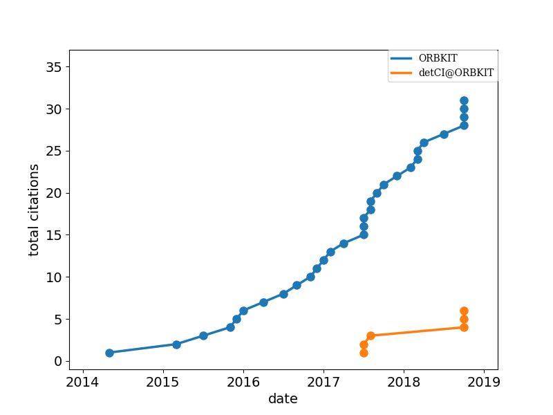

Literature¶
Complete list of papers citing ORBKIT and detCI@ORBKIT:
| # | Publication |
|---|---|
| 1 | Gunter Hermann et al. Phys. Rev. A 89, 7 (2014) |
| 2 | Jhon Fredy Perez-Torres J. Phys. Chem. A 119, 2895–2901 (2015) |
| 3 | Tatiana Gomez et al. Molecules 20, 13830–13853 (2015) |
| 4 | Gunter Hermann et al. J. Phys. Chem. C 119, 25606–25614 (2015) |
| 5 | Matthias Berg et al. Mol. Phys. 114, 1356–1364 (2015) |
| 6 | Vincent Pohl et al. Phys. Rev. A 93, 10 (2016) |
| 7 | Gunter Hermann et al. J. Phys. Chem. A 120, 5360–5369 (2016) |
| 8 | Efthymios I. Ioannidis et al. J. Comput. Chem. 37, 2106–2117 (2016) |
| 9 | Somayeh Pirhadi et al. J. Mol. Graph. Model. 69, 127–143 (2016) |
| 10 | Beate Paulus et al. Phys. Rev. A 94, 15 (2016) |
| 11 | Gunter Hermann et al. J. Chem. Phys. 145, 174704 (2016) |
| 12 | Vincent Pohl et al. J. Phys. Chem. C 120, 28808–28819 (2016) |
| 13 | Dongming Jia et al. Chem. Phys. 482, 146–159 (2017) |
| 14 | Karim Elhadj Merabti et al. Phys. Rev. A 95, 8 (2017) |
| 15 | Vincent Pohl et al. J. Comput. Chem. 38, 1515–1527 (2017) |
| 16 | Jalal Z. A. Laloo et al. J. Comput. Aided Mol. Des. 31, 667–673 (2017) |
| 17 | Dennis J. Diestler et al. J. Phys. Chem. A 121, 5332–5340 (2017) |
| 18 | Vincent Pohl et al. arXiv preprint arXiv:1707.07635 (2017) |
| 19 | Gunter Hermann et al. arXiv preprint arXiv:1707.01419 (2017) |
| 20 | Gunter Hermann et al. J. Comput. Chem. (2017) |
| 21 | Gunter Hermann et al. Chem. Phys. Lett. 683, 553–558 (2017) |